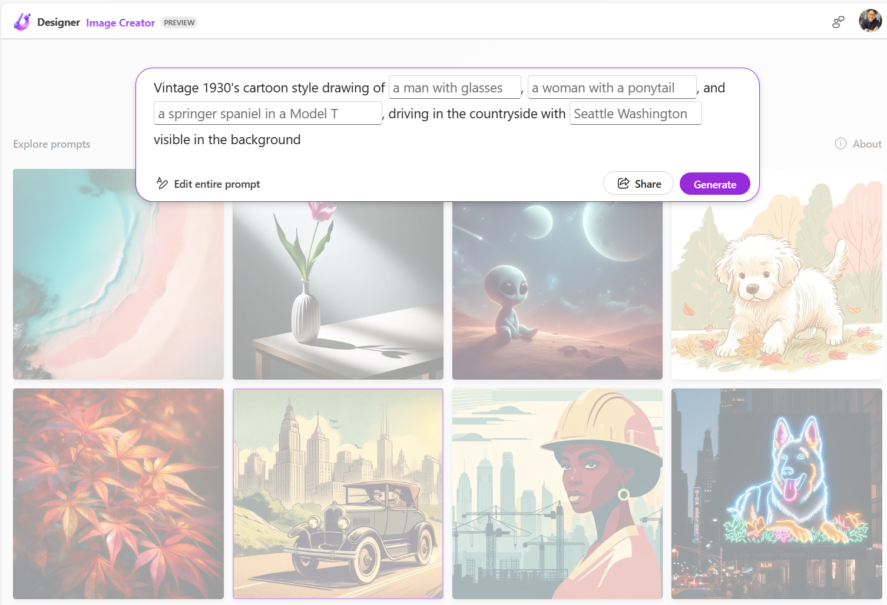

contributor: 조남경님
- 그림을 그리는 AI, DALL.E는 다양한 스타일을 학습했습니다.
- 프롬프트에 “watercolor” 또는 “수채화”를 입력하는 것 만으로 수채화 형식의 그림 생성을 명령할 수 있습니다.
- DALL.E는 스타일을 얼마나 많이 알고 있을까요? 궁금해서 테스트해봤습니다.
1. DALL.E 프롬프팅
현재 DALL.E는 네 곳에서 사용할 수 있습니다.
1. Copilot Designer (舊 Bing Image Creator) : 무료입니다. 기본적으로 하루 15개의 부스트가 제공됩니다.
2. Microsoft Designer : 무료입니다. preview라 수시로 개편중이며 제한이 없습니다.
3. Microsoft Copilot (舊 Bing Chat) : 무료입니다. 내부적으로 2. Copilot Designer의 부스트를 차감하여 사용합니다.
4. ChatGPT : 유료사용자에 한해 사용 가능합니다.이 외 Edge Browser의 sidebar에서도 사용할 수 있지만 본질적으로 3. Microsoft Copilot과 동일합니다.
- 많은 자료와 책, 동영상, 강의에서 이미지 생성 프롬프팅을 논합니다.
- 저는 규칙에 얽매이지 말고 눈 앞에 보이는 것을 글로 표현하자는 입장입니다만,
- 이를 어려워하시는 분들도 있어 프롬프팅 방식을 공식처럼 제안해주시는 분들도 있으십니다.
- DALL.E를 사용할 수 있는 곳들에서도 프롬프트 예시를 제공합니다.
1.1. Copilot Designer
- 프롬프트 입력창 아래 간단한 예시가 나옵니다.
- 몇 개의 스타일 이름을 알려주며 대상이나 톤 등 다른 프롬프트와 결합해 사용하는 법을 알려줍니다.
- 아래 이미지 위에 마우스를 올리면 이미지를 만든 프롬프트를 볼 수 있습니다.
1.2. Microsoft Designer
- 가장 적극적인 방식으로 알려줍니다.
- 그림을 클릭하면 해당 이미지를 만든 프롬프트가 보일 뿐 아니라 빈칸채우기로 수정할 수 있습니다.

1.3. Microsoft Copilot
- 본래 검색엔진 Bing에 ChatGPT와 같은 범용 거대언어모델이 결합한 형태로, 아무런 대화를 할 수 있습니다.
- 여기서 “그려줘” 또는 “create” 로 시작하는 프롬프트를 입력해 그림을 그릴 수도 있지만,
- 최근 Copilot 오른쪽 GPTs로 분류된 곳에 Designer가 따로 마련되었습니다.
- 여기를 가면 몇 가지 예시와 함께 여기에 마우스를 올리면 이 그림을 그린 프롬프트를 볼 수 있습니다.
1.4. ChatGPT
- 왼쪽 사이드바 GPTs에서 DALL.E를 선택하면 프롬프트 입력창 위에 스타일 선택 버튼이 생깁니다.
- 프롬프트를 입력하며 프롬프트 위에 마우스를 가져가면 귀여운 고양이 그림에 스타일이 적용된 결과가 보입니다.
- 선택하면 프롬프트에 해당 효과를 추가할 수 있고, 맘에 들지 않으면 섞기 버튼을 클릭하면 새로운 스타일이 보입니다.
- 오른쪽에 있는 Aspect Ratio를 클릭하면 그림의 종횡비를 바꾸는 프롬프트가 추가됩니다.
2. ChatGPT에서 DALL.E 스타일 목록 추출
2.1. 스타일 목록 추출 방법 확립
- 낯선 이름도 보이는 것을 보니 적지 않은 스타일이 담겨있는 것이 분명합니다.
- 스타일 목록을 찾아봤으나 없네요.
- 일일이 클릭하며 테스트해볼 수 있지만, 전체적으로 어떤 것이 있으며 특징은 어떠한지 알고 싶습니다.
- ChatGPT에게 목록을 알려달라고 요청합니다.
- 리스트를 달라고 했는데 사용법을 알려줍니다.
- impressionism, surrealism, pixel art 같은 스타일 이름을 입력하면 된다네요.
- Van Gogh, Leonardo da Vinci, Rembrandt 같은 화가 이름도 된다지만 스타일에 집중합니다.
- 예제를 들면서 리스트로 줄 수 있는지를 요청합니다.
- 성공입니다. 기법 이름과 함께 간단한 설명을 줍니다.
- 그런데 목록이 짧습니다. 20개 밖에 안 주네요. 그럴 리가 없는데요.
- 일단 추출 기법을 확립하고 반복을 시킵시다. pandas DataFrame으로 정리하라고 시킵니다.
- 네 좋습니다. 정리가 좀 되네요.
- 이제 엑셀 파일로 출력도 시켜봅니다.
- 엑셀 파일 출력도 잘 합니다. 다운로드해서 잘 들어갔는지 열어봅니다.
- 검토 결과 문제가 없습니다.
- 기법이 200개쯤 있다고 가정하고 이 방법을 10번 반복시킵니다.
2.2. 목록 추출 반복
- 위에서 ChatGPT에게 시킨 행동을 10차례 반복시킵니다.
- 한번에 200개를 추출하라고 시키지 않습니다.
- Data Analytics의 동작 시간이 1분으로 제한되어 있기 때문입니다.
- DataFrame을 작성하다가 타임아웃이 되어버리기 때문에 20개짜리를 10번 만들어 붙이는 식으로 진행합니다.
- 이런 식으로 짧게 반복시키면 Data Analytics의 다른 장점을 활용할 수 있습니다.
- 실패해도 스스로 재시도한다는 점입니다.
- 작업이 완료된 후, 여러 개의 데이터프레임을 병합합니다.
- 일일이 할 수도 있지만 메모리에 있는 것들을 한번에 합치는 것도 좋습니다.
- 이번에는 일괄적으로 명령을 내리기보다 Jupyter Notebook을 사용하는 기분으로 한 단계씩 합니다.
- 연습을 포함해 총 22개의 DataFrame을 병합했습니다.
- 산술적으로 440개의 style을 수집했을 테지만, 중간에 파일을 받아 확인한 결과 중복이 적지 않습니다.
- 중복을 제외하고 358개의 스타일이 있다고 하네요.
- “style” 컬럼 기준으로 중복을 제외시킵니다.
- 캡처는 안했지만 이름순으로 정렬도 시키고 “No.” 컬럼 번호도 새로 매기라고 했습니다.
- 엑셀로 받아서 확인합니다.
- 내가 아는 스타일이 없나 확인합니다.
- watercolor가 없네요. 뭔가 빠진 것 같습니다.
- 스타일이 더 많이 있는 것 같습니다.
2.3. 빠진 스타일 추가
- 다 된 줄 알고 아까 대화창을 닫아버렸습니다.
- 목록을 정리하고 다운받는데 사용한 Data Analyst는 대화를 이어갈 수 없습니다.
- 임시로 만든 서버가 사라졌기 때문입니다.
- 새 창을 열고, 아까 받아둔 파일을 업로드해서 20개를 추가하라는 작업을 지시합니다.

- 생각보다 빠르게 결과를 줍니다.
- 그런데 파일을 열어보면 내가 알고 있고, 적용되는 스타일이 여전히 없습니다.
- 위 작업을 여러 차례 반복시켜 100개 정도를 더 추가해 보았지만, 중복만 되고 새 스타일이 추가되지 않습니다.
- 이런 방식으로 알아내는 데는 한계가 있다는 깨달음을 얻습니다.
- 빠진 스타일들이 있는 반면 중복된 스타일도 많습니다.
- 예를 들어 Baroque Art와 Baroque는 같을 겁니다.
- ChatGPT에게 의뢰해서 중복을 제거합니다.
자동으로 제거되지 않은 YBA와 YBAs의 중복을 수동으로 해결합니다.
최종적으로 얻은 스타일 수가 360개네요. 적지 않습니다.
DALL.E 스타일 360개 목록은 여기서 받을 수 있습니다: 다운로드
이름을 알았으니, 이제 그려봅시다.
다음 글 예고
- ChatGPT에서 360개 그리고 있다가는 인내심과 시간의 한계에 부딪힐 것 같습니다.
- OpenAI API를 이용해서 자동으로 그림을 생성했습니다.
- 다음 글에서는 OpenAI API로 DALL.E를 구동하는 방법을 다룹니다.